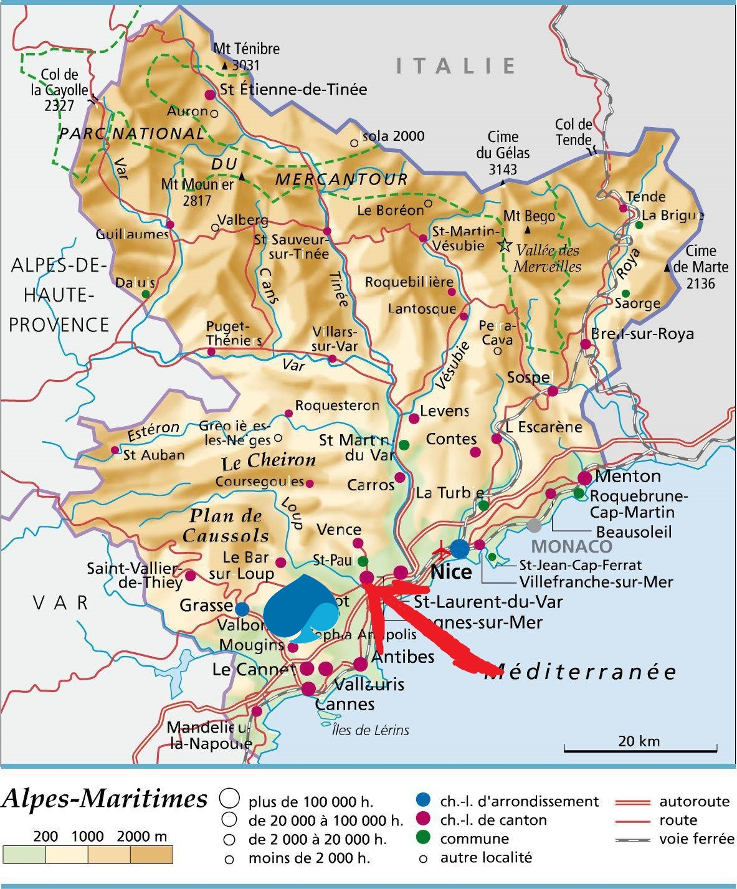
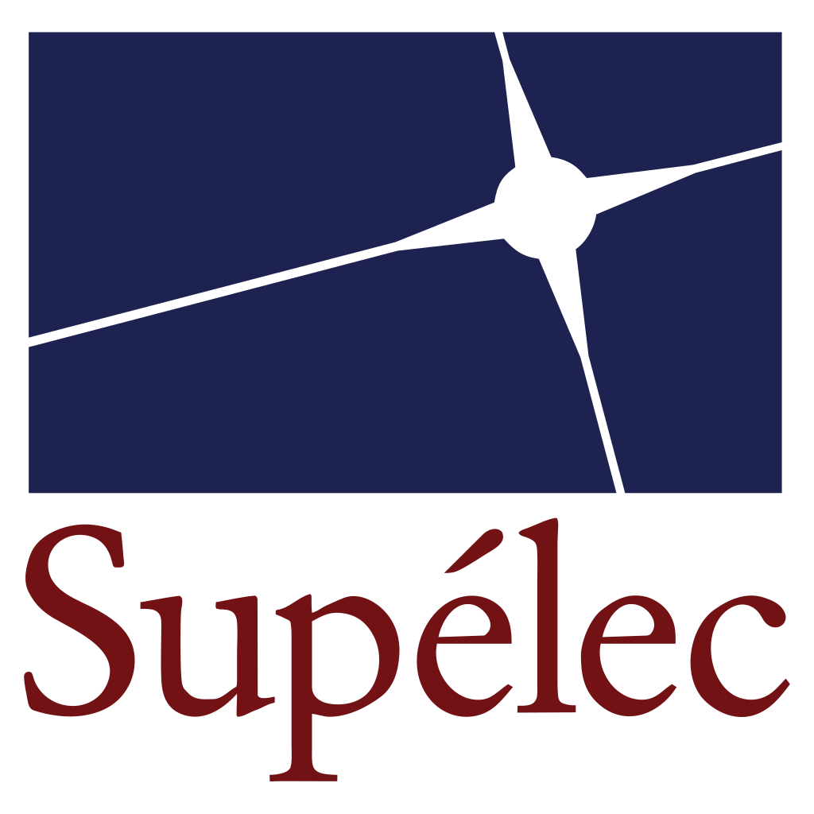

Hi!
(Please use arrows to navigate through slides)
Let me introduce myself
I'm Francis

I live here
Well here...
When I was young, I wanted to become this:
But in fact I was closer to that...
So I started studying Computer Science
 And eventually graduated from the coolest
engineering school in the universe
(don't even try to argue...)
And then I started working for Capgemini 3 years ago

I started (timidly) as a developper
...And quickly gained confidence
But more importantly, I truly became an engineer

Collaborating with my colleagues
...and clients
Discovering processes and project lifecycle
Then...
Now I need to give my career another boost
Working on new skills like...
Leadership
Networking

Proactivity
The Accelerate&Connect program would be a great opportunity for me to work on these